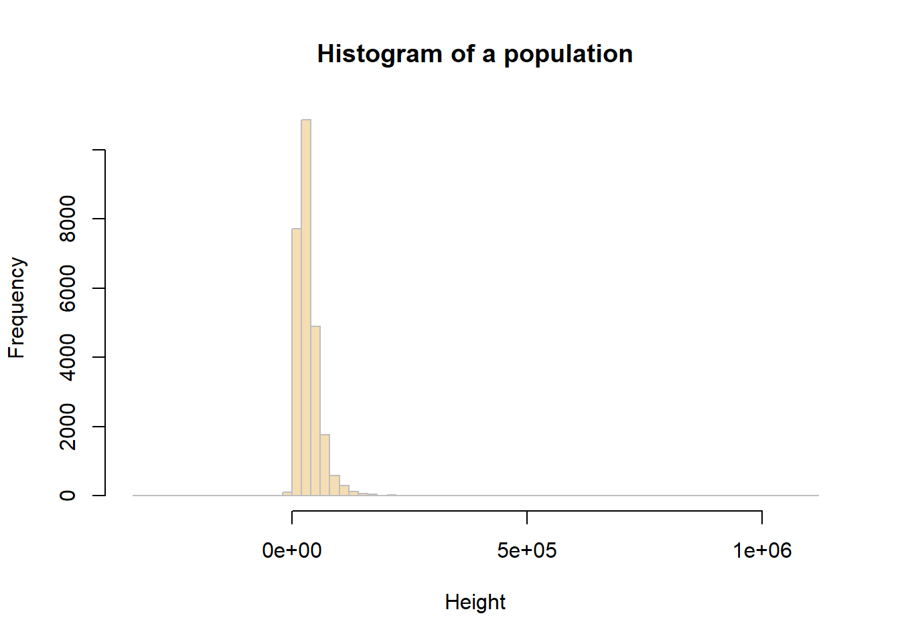
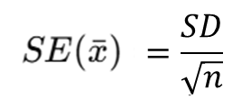
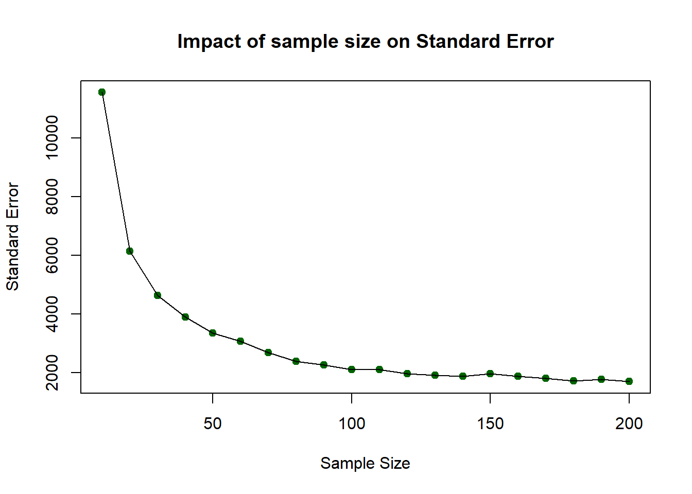
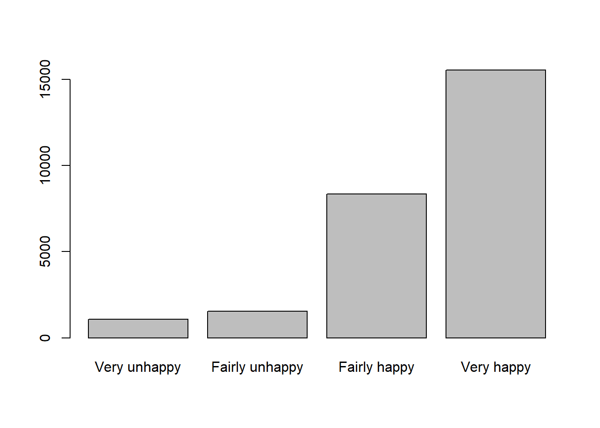
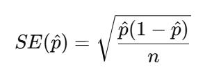
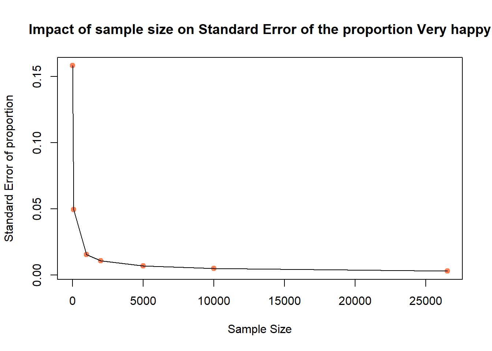
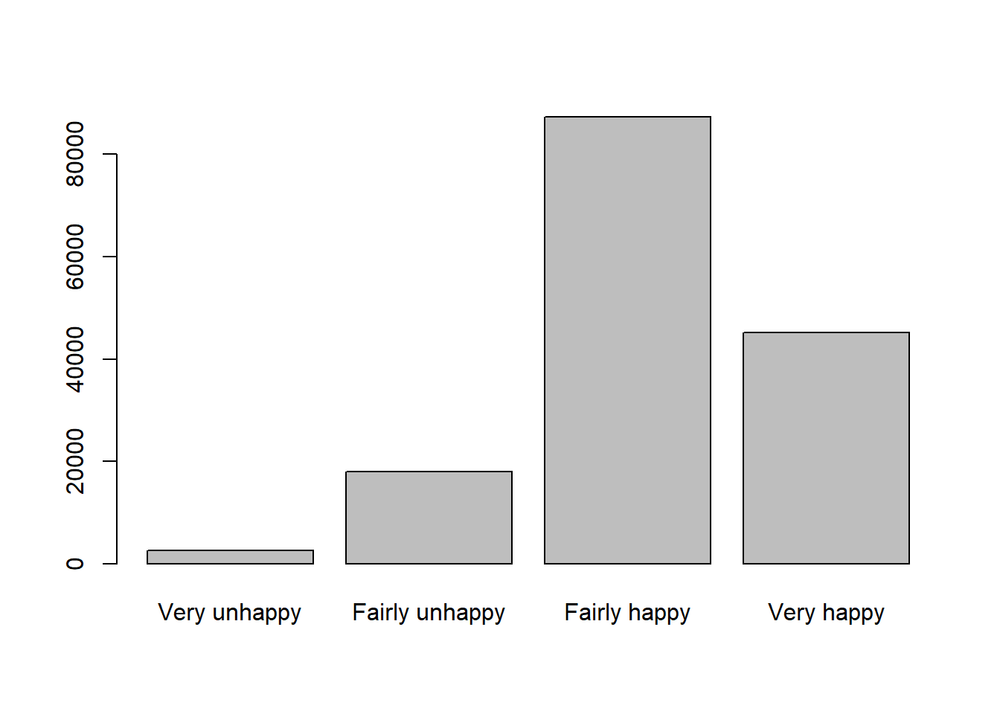
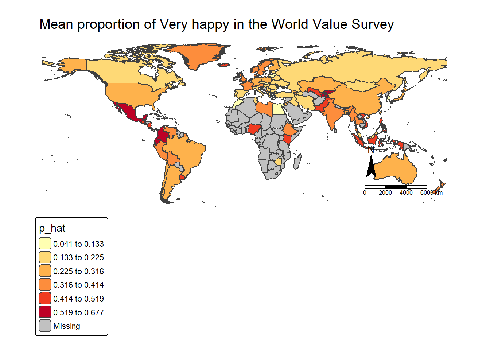

rm(list = ls())3 Lab: Introductory Statistics - Happiness around the world
3.1 Overview
We have used Census data for the past two weeks. Census data aim to collect detailed information about every person and household in the UK, particularly on personal characteristics, household and housing, work and education, health, migration, and so on. The aim of such collection is to support plan public services and infrastructures.
Different from census (which counts the entire population), in many cases, we need to use surveys to obtain timely, cost-effective and probably more specific in-depth information from people. Therefore, this week’s practical session will draw upon two survey datasets:
UK Family Resource Survey
World Value Survey
We will use these survey datasets to investigate the sample more thoroughly and employ statistical approaches to determine its representativeness of the population. We will use both numerical and categorical variables to calculate the sample mean, Standard Error and Confidence Intervals in different sample size.
You may wish to recap this week’s lecture: Lecture 03
3.2 Prepare your working environment
For this Week 3 session, create a sub-folder called Week3 in your ENVS162 folder on your M-Drive. This is exactly the step we did in Week 1 and 2 and we will do this every week to Week 5.
Download this week’s practical datasets from Canvas Week 3: family_resource_survey.csv, world_value_suvey.csv and world_map.geojson. Save all these three datasets in the Week 3 folder you just created.
Open RStudio
Open a new R Script for your Week 3 work, rename it as Week3.R and save it in your newly created Week 3 folder, under M drive -> ENVS162 folder.
Check whether there is any previous left dataframes in your RStudio in the upper-right side Environment pane. You can always use the to clear all the dataframes in your environment and make it all clean. For the same aim, you can click the icon
 , or you can run the below code:
, or you can run the below code:
This command and also the brush icon can both clear RStudio’s memory, removing any data objects that you have previously created.
3.3 Load libraries and familiar with survey data
Exactly as what we have done for Week 1 and 2, before we start to do anything in R, we first need to load the essential libraries as all the functions/commands are packed in these libraries. For this week, we will still rely on tidyverse, tmap and sf.
library(tidyverse)
library(sf)
library(tmap)Recall that the data can be loaded into RStudio using the read.csv function:
# use read.csv to load a CSV file
df <- read.csv("family_resource_survey.csv",stringsAsFactors = TRUE)The stringsAsFactors = TRUE parameter tells R to read any character or text variables as classes or categories and not as just text.
Recall what we should do to familiar ourselves with the dataset? We need to now how many rows and columns of the dataset, what are the variables, what types of these variables, and we may what to view the dataset for a quick scan?
Therefore, we need these functions: dim() or ncol() and nrow(), names(), str(), and View().
# know how many rows and columns
dim(df)
# know the names of the variables
names(df)
# know types and examples of these variables
str(df)
# open a view window to scan the dataset
View(df)Question 1. How many people have been included in this survey?
In Week 2, we also know a simple way to help us get a quick look at the descriptive summary of all the variables:
# summary all variables
summary(df)Okay, if for now you get yourself familiar with the dataset you are going to work on, let’s move on.
3.4 Sampling of numerical variables
As discussed in the lecture, the Standard Error (SE) of the sample mean indicates how much the estimated mean is expected to vary from sample to sample. Together, the sample mean and SE help us assess how accurately our sample reflects the true population mean. A smaller SE indicates our sample estimate is likely closer to the actual population value.
From the steps of familiaring with the dataset, you should already know that there are 33,847 people included in this dataset. Recall our lecture, these 33,847 people should be selected by some sampling methods - random or stratified or multistaged - but in any case, they are a sample of the entire world population.
Here, in this practical, let’s assume that our survey data is about a certain population. With such assumption, our population is the people what completed the survey. Thus in this section, we are pretending that the survey respondent are the population.
We can test the mean and standard deviation of the hh_income_net of the population using the functions mean() and sd(). In Week 2, we have learnt that the mean tells you the center of your numerical variable, and the standard deviation reveals how spread out the variable are around the mean.
# calculate the mean value of the variable
mean(df$hh_income_net)[1] 34485.51# calculate the standard deviation of the variable
sd(df$hh_income_net)[1] 29379.1You can examine the income_net distribution by creating a histogram as using the code below (you should be very competent of this from Week 2):
# plot a histogram for the variable income_net in df
hist(df$hh_income_net, breaks = 100,
main = "Histogram of a population",
xlab = "Height",
col = "wheat",
border = "grey")
3.4.1 Sample mean and Standard Error
In the example below, we will work with the hh_income_net variable and an initial sample of 10 people (observations).
You can assess a sample of 10 observations (survey respondents) taken from the population at random using the sample function.
# Create a sample of the population
sample_10 <- slice_sample(df, n=10)# sample mean value
mean(sample_10$hh_income_net)[1] 34663.2# sample standard deviation
sd(sample_10$hh_income_net)[1] 16597.94You will get a different values for these to the ones your friends get (and the ones created below), because you will have each extracted a different sample from the population - this is random sampling!
You should calculate the Standard Error (SE) of the sample mean by:

In R we run the code below:
# sample SE
sd(sample_10$hh_income_net)/sqrt(length(sample_10$hh_income_net))[1] 5248.728# or
sd(sample_10$hh_income_net)/sqrt(nrow(sample_10))[1] 5248.728Question 2. Compare population mean, sample mean and SE mean from your results?
Now,to see how using a larger sample improves the estimate, you will now repeat the previous example, generating a sample, determining the sample means and SEs, but using different sample sizes: 10, 50, 100, 200.
Complete the below table for the comparison:
| Random sample size | Sample mean | Stardard Error (SE) mean |
|---|---|---|
| 10 | ||
| 50 | ||
| 100 | ||
| 200 |
The above should have given you the general idea that as sample size increases, the sample estimate of a population mean becomes more reliable. To show this clearly, the code below generates a trend line plot showing the impact of sample size on Standard Errors. As the sample gets larger the SE gets smaller as the sample more closely represents the true population.
# create a vector of sample sizes
X = seq(10, 200, 10)
# check the result
X [1] 10 20 30 40 50 60 70 80 90 100 110 120 130 140 150 160 170 180 190
[20] 200# create a vector of sample errors from these
# an empty vector to be populated in the for loop below
SE = vector()
# now loop though each value in X
for (i in X){
# create a sample for the ith value in X
# set the seed - see the Info box below
set.seed(12)
sample.i = slice_sample(df, n=i)
# calculate the SE
se.i = sd(sample.i$hh_income_net)/sqrt(length(sample.i$hh_income_net))
# add to the SE vector
SE = append(SE, se.i)
}
# check the result
SE [1] 11545.970 6139.880 4638.476 3893.327 3353.118 3067.783 2687.440
[8] 2391.198 2261.770 2103.450 2114.780 1979.338 1915.625 1882.336
[15] 1979.165 1878.847 1810.918 1725.824 1776.093 1705.949You can then these plot these:
# plot the SEs
plot(x = X, y = SE,
pch = 19, col = "darkgreen",
xlab = "Sample Size", ylab = "Standard Error",
main = "Impact of sample size on Standard Error")
lines(x = X, y = SE)
So…as sample size increases, the sample estimate of a population mean becomes more reliable. However, you should note that this was based on one-off sample generation and looking at the SE. In the next section you will apply confidence intervals to the sample in order to assess the robustness of the sample.
3.4.2 Confidence Intervals
The idea of a confidence interval, CI, is a natural extension of the standard error. It allows us to define a level of confidence in our population parameter estimate gleaned from a sample:

We can use the qnorm function. qnorm(p) gives the value on the normal distribution such that the cumulative probability up to that value equals p. It is used at here to calculate the errors around the sample mean under an assumption of a normal distribution of the population (hence the norm bit of qnorm):
# you have already created the sample with
# sample_10 <- slice_sample(df, n=10)
m <- mean(sample_10$hh_income_net)
m
std <- sd(sample_10$hh_income_net)
n <- length(sample_10$hh_income_net)
error <- qnorm(0.975)*std/sqrt(n)
lower.bound <- m-error
upper.bound <- m+error# upper and lower bound
upper.bound
lower.boundThis is the 95% confidence interval, for the rest 2.5% in the lower tail and 2.5% in the upper tail. This is why you may find in the code, we use qnorm(0.975) as that refers to the cutoff points in two directions). Again, you may find your values subtly different due to random sample. But in my case, the mean household net income is 42,110 pound, and we are 95% confident that the mean household net income is between 22,842 pound and 61,376 pound. This can be a really fuzzy estimates, and it is because we only use 10 respondents from the survey and by using such as small sample size, the CI window would be very fuzzy.
Let’s change the above code to a sample size of 1000:
# change sample size from 10 to 1000 this time
sample_1k <- slice_sample(df, n=1000)
m <- mean(sample_1k$hh_income_net)
m
std <- sd(sample_1k$hh_income_net)
n <- length(sample_1k$hh_income_net)
error <- qnorm(0.975)*std/sqrt(n)
lower.bound <- m-error
upper.bound <- m+error
lower.bound
upper.boundNow you see that the sample mean has changed to 36,680, which indicates that the mean household net income is 36,680 pound, and we are 95% confident that the mean household net income is between 33,934 pound and 39,427 pound. Therefore, with this sample size as 1000 sample, the CI window is much narrow and the result is more solid.
You may try out if we use all the respondents as the sample, what is the result? In this case, we don’t need to slice_sample(), and the n should be n = nrow(df).
3.5 Sampling of categorical variable
Now, we switch our focus to the categorical variable happiness in the dataframe. Similar to what we have done in last week, we first wish to have a descriptive summary of the categories and frequency of categories for categorical variables. We can use table() here:
# categories and frequencies
table(df$happiness)
Fairly happy Fairly unhappy Very happy Very unhappy
8346 1552 15548 1079 You may also remember how to create a table to display the frequency and proportion of each category:
# use df to create a table, including frequency and percentage of each category
df %>%
count(happiness) %>%
mutate(pct = round(n / sum(n) * 100,1)) happiness n pct
1 Fairly happy 8346 31.5
2 Fairly unhappy 1552 5.9
3 Very happy 15548 58.6
4 Very unhappy 1079 4.1The pct in the table, is the percentage of respondents in our Family Resource Survey sample who reported each level of happiness. In other words, they are the sample proportion for variable happiness in this dataset.
Meanwhile, recall from Week 2 lecture, there are two types of categorical variables: nominal and ordinal. The key difference between them is whether the categories have a nature ordering. In this case, the happiness variable is ordinal, because its categories follow a meaningful order: Very unhappy, Fairly unhappy, Fairly happy, and Very happy.
Therefore, as we wish to display the variable with an order, we use R function factor() to do so:
#set the ordering of categories
df$happiness <- factor(
df$happiness,
levels = c("Very unhappy",
"Fairly unhappy",
"Fairly happy",
"Very happy"),
ordered = TRUE
) If we now re-run the code to generate the frequency table and proportions, you will notice that the categories appear in a more logical order, reflecting the ordinal structure of the variable.
This time, we label the proportion column as p̂ (p-hat) to emphasise that these values represent the sample proportions for each happiness category.
df %>%
count(happiness) %>%
mutate(p_hat = round(n / sum(n) * 100,1)) happiness n p_hat
1 Very unhappy 1079 4.1
2 Fairly unhappy 1552 5.9
3 Fairly happy 8346 31.5
4 Very happy 15548 58.6We use barplot() from last week to present the happiness variable distribution in the Family Resource Survey:
#use bar plot to visualise the distribution of categorical variable
tab=table(df$happiness)
barplot(tab)
Question 3. What pattern you can identify from the barplot about happiness in this sample?
3.5.1 Sample proportion and Standard Error of the proportion
In this section, we will focus on the Very happy category, we can check the sample mean of Very happy from the eariler work and the p_hat is 58.6%. This can also be calculated by mean():
#calculate sample mean
p_hat = mean(df$happiness == "Very happy")
p_hat[1] 0.586164Now let’s calculate the Standard Error. Recap the equation of Standard Error for a proportion:

So, we need the sample size n first and then use n and p_hat to calculate the SE_p. If we select all the respondents in the dataset as the sample, then the n is equal to the nrow().
#calculate Standard Error
n = nrow(df)
n[1] 26525SE_p <- sqrt(p_hat * (1 - p_hat) / n)
SE_p[1] 0.003024099Therefore, now we get the interpretation that the “Very happy” sample proportion typically varies by about 0.003 or 0.30 percentage.
We can also test n from 10, 100, 1000 to all to plot the SE_p and see how sample size increased will reduce the Standard Error of proportion:
X = c(10, 100, 1000, 2000, 5000, 10000, n)
SE_p = vector()
# now loop though each value in X
for (i in X){
# create a sample for the ith value in X
# set the seed - see the Info box below
set.seed(20)
sample.i = slice_sample(df, n=i)
# calculate the sample mean of proportion
p_hat = mean(sample.i$happiness == "Very happy")
# calculate the SE of proportion
se.i = sqrt(p_hat * (1 - p_hat) / i)
# add to the SE vector
SE_p = append(SE_p, se.i)
}
# check the result
SE_p[1] 0.158113883 0.049355851 0.015409607 0.010928626 0.006966181 0.004908920
[7] 0.003024099We can then these plot these:
# plot the SEs
plot(x = X, y = SE_p,
pch = 19, col = "coral",
xlab = "Sample Size", ylab = "Standard Error of proportion",
main = "Impact of sample size on Standard Error of the proportion Very happy")
lines(x = X, y = SE_p)
Again, we know that with the increase of sample size n, the Standard Error decreases.
3.5.2 Confidence Intervals for a proportion (95%)
We now calculate a 95% confidence interval for the proportion of respondents who reported being Very happy in our sample.
To do this, we use the full sample size n. Recall that for a proportion, CI for a proportion (95%) is
The critical value is again the qnorm(0.975) as we did for the numerical variable, if you qnorm(0.975) then you may find it is 1.96. The below R code help use to calculate the CI windows of sample mean, when sample size is n.
#CI windows
p_hat = mean(df$happiness == "Very happy")
p_hat[1] 0.586164n <- nrow(df)
SE_p <- sqrt(p_hat * (1 - p_hat) / n)
error_p <- qnorm(0.975) * SE_p
lower.bound <- p_hat - error_p
upper.bound <- p_hat + error_p
lower.bound[1] 0.5802369upper.bound[1] 0.5920911Therefore, the confidence interval can be interpreted as follows: in the current UK Family Resources Survey, the sample proportion of respondents reporting being Very happy is 58.6%. The 95% confidence interval indicates that we are 95% confident that the true population proportion lies between 58.0% and 59.2%.
3.6 Compare to World Value Survey
We know that when the sample changes, the survey results may also differ. Now we turn to a different dataset — the World Values Survey — and repeat the same analytical process to examine how the happiness results compare.
3.6.1 Happiness in different survey sample
As usual, we first load the World Value Survey data:
# use read.csv to load a CSV file
dat <- read.csv("world_value_suvey.csv",stringsAsFactors = TRUE)Again, we wish to treat the happiness variable with its natural ordering:
#set ordering
dat$happiness <- factor(
dat$happiness,
levels = c("Very unhappy",
"Fairly unhappy",
"Fairly happy",
"Very happy"),
ordered = TRUE
) We also want to have a descriptive summary of the count in each category and compute the percentage distribution:
# descriptive summary table
dat %>%
count(happiness) %>%
mutate(p_hat2 = round(n / sum(n) * 100,1)) happiness n p_hat2
1 Very unhappy 2517 1.6
2 Fairly unhappy 18032 11.8
3 Fairly happy 87342 57.1
4 Very happy 45118 29.5Not just as the table above, a barplot would better support the descriptive summary visually:
# barplot visualise
tab = table(dat$happiness)
tab
Very unhappy Fairly unhappy Fairly happy Very happy
2517 18032 87342 45118 barplot(tab)
As what we have done earlier, we want to focus on the Very happy category so we first calculate the sample proportion of respondents who are Very happy.
#sample proportion of Very happy
p_hat2 = mean(dat$happiness == "Very happy")
p_hat2[1] 0.2948715To estimate the Standard Error, we use the same coding, but this time, the sample size is called k and all the respondents are included:
#Standard Error for the proportion of Very happy
k = nrow(dat)
k[1] 153009SE_p2 <- sqrt(p_hat2 * (1 - p_hat2) / k)
SE_p2[1] 0.001165714The estimated proportion of respondents who are Very happy typically varies by about 0.0012 (or 0.12 percentage points) from sample to sample due to random sampling variation.
And the Confidence Intervals:
p_hat2[1] 0.2948715SE_p2[1] 0.001165714error_p2 <- qnorm(0.975) * SE_p2
lower.bound2 <- p_hat2 - error_p2
upper.bound2 <- p_hat2 + error_p2
lower.bound2[1] 0.2925868upper.bound2[1] 0.2971563The sample proportion of respondents who are Very happy is estimated to be around 29.5%. The 95% confidence interval suggests that we are 95% confident that the true population proportion lies between 29.3% and 29.7%.
Compare to our earlier results by using UK Family Resource Survey, the findings are quite lower. You may have your inference that this is because earlier respondents are all from the UK but now it is from all over the world. Therefore, let’s filter only UK respondents from this World Value Survey:
# filter UK respondents from the whole survey sample
dat_uk = dat %>% filter(english_short_name == "United Kingdom")#calculate sample mean proportion for UK sample only
dat_uk %>%
count(happiness) %>%
mutate(p_hat3 = round(n / sum(n) * 100,1)) happiness n p_hat3
1 Very unhappy 34 0.7
2 Fairly unhappy 335 7.1
3 Fairly happy 2572 54.6
4 Very happy 1772 37.6p_hat3 = mean(dat_uk$happiness == "Very happy")
p_hat3[1] 0.3759813Question 4. Compute the SE and CI for the UK sample only dataframe dat_uk. How you will interpret the results?
3.6.2 Between regions and countries
You may have noticed that, even within the World Values Survey, the sample proportion of respondents reporting being Very happy in the UK is higher than the overall sample proportion.
We can now continue to explore how happiness varies across different regions and countries to see whether similar patterns emerge elsewhere.
To fulfill this task, we shall use the cross-tabulation method we did last week, by using table() between region_name and happiness:
#cross-tabulate region vs happiness
table(dat$region_name, dat$happiness)
Very unhappy Fairly unhappy Fairly happy Very happy
Africa 421 1627 4829 2645
Americas 287 2868 11541 9053
Asia 866 5468 26994 14992
Europe 927 7894 42287 17539
Oceania 16 175 1691 889You may think, okay, but it is very hard to draw conclusions based on the counts. You are right. Let’s change the count table into a proportion one by using function prop.table().
To know the function, we can first ask R’s help:
?prop.tableOn your RStudio’s right-hand Help pane, we can learn that we can set parameter margin in to 1 to indicate the division should be done by row (each row sums up to as 1), and margin = 2 as the division by columns (each column sums up to 1).
Let’s try both margin=1 and margin=2:
#get the cross-tabulation result and present in proportion format, margin = 1
tab_region_happy = table(dat$region_name, dat$happiness)
prop.table(tab_region_happy, margin = 1) * 100
Very unhappy Fairly unhappy Fairly happy Very happy
Africa 4.4213401 17.0867465 50.7141357 27.7777778
Americas 1.2084719 12.0762979 48.5957303 38.1194998
Asia 1.7922185 11.3162252 55.8650662 31.0264901
Europe 1.3503868 11.4994100 61.6006526 25.5495506
Oceania 0.5774089 6.3154096 61.0249008 32.0822808round(prop.table(tab_region_happy, margin = 1) * 100, 2) #round(...,2) to keep only 2 digits for all the numbers
Very unhappy Fairly unhappy Fairly happy Very happy
Africa 4.42 17.09 50.71 27.78
Americas 1.21 12.08 48.60 38.12
Asia 1.79 11.32 55.87 31.03
Europe 1.35 11.50 61.60 25.55
Oceania 0.58 6.32 61.02 32.08A vague calculation you may notice that each row (region) sums to 100 (as in the above codes, we multipled the proportion by 100 to express them as percentage). This means the table presents row percentages: within each region, the percentages show how respondents are distributed across the different levels of happiness. In other words, the table allows us to compare how the distribution of happiness varies across regions within the sample.
If we simply change margin = 1 to margin = 2, the results will be different because we are now calculating column percentages instead of row percentages.
round(prop.table(tab_region_happy, margin = 2) * 100, 2)
Very unhappy Fairly unhappy Fairly happy Very happy
Africa 16.73 9.02 5.53 5.86
Americas 11.40 15.91 13.21 20.07
Asia 34.41 30.32 30.91 33.23
Europe 36.83 43.78 48.42 38.87
Oceania 0.64 0.97 1.94 1.97With margin = 2, each column sums to 100. This means we are looking at the distribution of regions within each happiness category.In other words, instead of asking: “Within each region, how is happiness distributed?” we are now asking: “Among respondents at each happiness level, how are they distributed across regions?” - This changes the interpretation entirely.
Now it’s the time to check out the comparison among countries. Here we use variable english_short_name as the country to cross-tabulate happiness:
tab_country_happy = table(dat$english_short_name, dat$happiness)
round(prop.table(tab_country_happy, margin = 1) * 100, 1) #round(...,1) to keep only 2 digits for all the numbersQuestion 5. What conclusion you can draw from the findings? Change margin from 1 to 2, what new information you can learn from the results?
Again, in the following section, we want focus on the proportion of very happy in each country only, we can use two functions group_by() %>% summarise() to fulfill this request:
#group dat by the country name, in each group, calculate the mean proportion of happiness reported as Very happy
df_ctry_very_happy <- dat %>%
group_by(english_short_name) %>%
summarise(p_hat = mean(happiness == "Very happy", na.rm = TRUE)) #if any rows include NA value, remove themdf_ctry_very_happyThis produces one row per country, with the sample proportion of respondents who are Very happy.
We can get the top 1 country by using function which.max(). This function returns the row number corresponding to the maximum value of p_hat. We can then use that row number to extract the full row from the dataframe: to get the row number of that country, and then ask R to return that row for us:
which.max(df_ctry_very_happy$p_hat)[1] 44df_ctry_very_happy[which.max(df_ctry_very_happy$p_hat),]# A tibble: 1 × 2
english_short_name p_hat
<fct> <dbl>
1 Kyrgyz Republic 0.677To identify the top 10 happiest countries (based on the proportion of respondents who are Very happy), we can use arrange() function to sort the df_ctry_very_happy dataframe by p_hat.
If we place a minus sign - before p_hat (i.e. arrange(-p_hat)), the dataframe will be sorted in decreasing order, from highest to lowest proportion. Without the minus sign, the sorting will be in ascending order, from lowest to highest.
You can also type ?arrange in RStudio to view the official documentation and see additional details about how the function works.
Now, top 10 Very happy:
df_ctry_very_happy %>% arrange(-p_hat) %>% head(10)# A tibble: 10 × 2
english_short_name p_hat
<fct> <dbl>
1 Kyrgyz Republic 0.677
2 Tajikistan 0.626
3 Ecuador 0.618
4 Mexico 0.588
5 Colombia 0.574
6 Uzbekistan 0.519
7 Guatemala 0.511
8 Philippines 0.511
9 Puerto Rico 0.510
10 Kenya 0.509bottom 10 Very happy:
df_ctry_very_happy %>% arrange(p_hat) %>% head(10)# A tibble: 10 × 2
english_short_name p_hat
<fct> <dbl>
1 South Korea 0.0410
2 Egypt 0.0644
3 Lithuania 0.0918
4 Hong Kong 0.111
5 Morocco 0.126
6 Latvia 0.132
7 Slovakia 0.133
8 Macao 0.145
9 Russia 0.149
10 Greece 0.154 3.6.3 Map happiness around the world
As usual, let’s finish today’s practical by a map made by ourselves.
First, load the world map boundaries from your working folder. Before producing the final map, we can generate a quick check map using qtm() to ensure the spatial data has loaded correctly. We also set tmap to interactive mode using tmap_mode("view"), so the map can be explored dynamically (e.g., zooming and clicking on countries) before creating the final visualisation.
#load the boundary dataset
world_map <- st_read("world_map.geojson")Reading layer `world_map' from data source
`C:\Users\ziye\Documents\GitHub\quant\labs\world_map.geojson'
using driver `GeoJSON'
Simple feature collection with 203 features and 14 fields
Geometry type: MULTIPOLYGON
Dimension: XY
Bounding box: xmin: -180 ymin: -58.49861 xmax: 180 ymax: 83.6236
Geodetic CRS: WGS 84#set as interactive map
tmap_mode("view")
#quick mapping
qtm(world_map)Click on any country in the world map within the Viewer pane on the right-hand side of RStudio. You will notice that the variable english_short contains the country name.
We can use this variable as the key to join the spatial map data with our country-level happiness dataframe, since it corresponds to the english_short_name variable in our survey dataset.
Before join them, let’s first inspect the structure of both dataframe:
dim(world_map)[1] 203 15dim(df_ctry_very_happy)[1] 91 2We can learn that the world map has 203 countries, but our df_ctry_very_happy only have 91, this means that not all the countries from the world_map will be able to plot based on the p_hat from df_ctry_very_happy. As a result, some countries will have missing values (NA) for the happiness proportion and therefore will not be coloured according to p_hat in the final map.
However, this is perfectly acceptable — those countries will simply appear with the default missing-value styling, while the countries included in our survey data will be shaded according to their estimated proportion of respondents who are Very happy.
Let’s use function left_join() to join the two dataframes:
#join our newly created dataframe df_ctry_very_happy to the world map by the shared columns
world_happiness = left_join(world_map, df_ctry_very_happy, by=c("english_short"="english_short_name") )A short code sentence would serve your first try on the new dataframe world_happiness. Don’t forget to click the  from your RStudio right-bottom Viewer pane for a full screen interactive map in your explorer:
from your RStudio right-bottom Viewer pane for a full screen interactive map in your explorer:
#View the map as an interview map
tm_shape(world_happiness) +
tm_polygons("p_hat")To make it looking better, let’s change the color palette and breaks. Click the from your RStudio right-bottom Viewer pane for a full screen interactive map - browse the map and interact with it to find how UK compare to other countries on this map? Any other findings interest you?
#plot the map as a static map, with color palette as Yellow-Orange_Red, with break styles as jenks into 6 classes
map = tm_shape(world_happiness) +
tm_polygons("p_hat",
fill.scale = tm_scale(values="YlOrRd",
style = "jenks",n=6))+
tm_layout(main.title = "Mean proportion of Very happy in the World Value Survey",
main.title.size=1.2,
frame = FALSE) +
tm_compass(position = c("right", "bottom")) +
tm_scalebar(position = c("right", "bottom"))
mapAt last, we can use tmap_mode("plot") to change the interactive map into a static one. Also we can save the map on your disk:
tmap_mode("plot")
map
tmap_save(map,"Week3 map.png")
Check in your folder and you shall find the map made by yourself.
3.7 Formative Tasks
Task 1 Use the income_gross variable from the UK Family Resource Survey, compare how increase sample size from 5000 to 20000 would affect the sample mean, standard error and CI of the income_gross. How to interpret the results?
Task 2 Use the health variable from the UK Family Resource Survey, what is the sample mean proportion of Very Good health in the whole sample? The standard error and CI? How to interpret the results?
Task 3 Use the health variable from the World Value Survey, compare your the sample mean proportion of Very good health with your findings in Task 2.
Task 4 Use the trust_strangers variable from the World Value Survey, compare between different regions (variable use sub_region_name). Which region more likely to trust strangers completely?
Task 5 Use the immigrant_impact variable from the World Value Survey, create a new dataframe to include the sample mean proportion of in each country/place (variable needed: english_short_name) who holds Very bad attitude of immigrant impact. Identify the five countries/places with the lowest mean proportion in the sample.